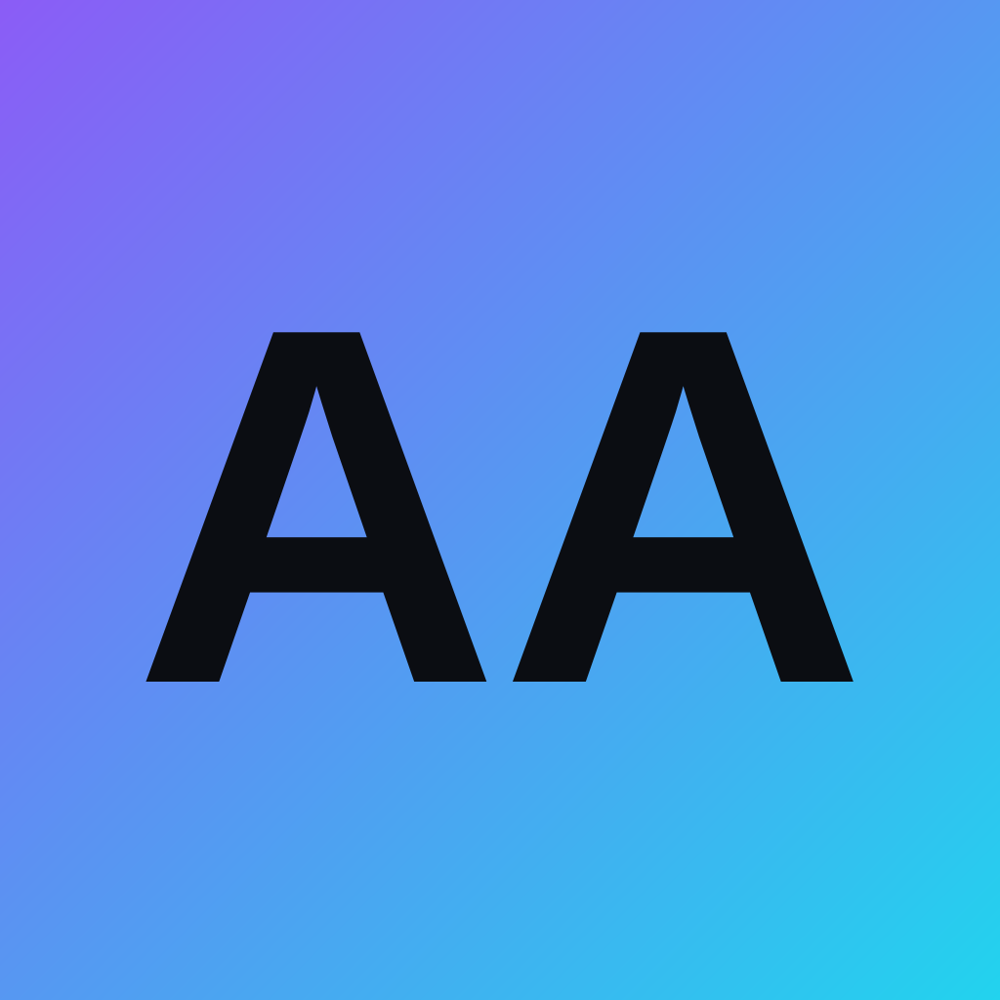

Aplicación de escritorio para Windows, de uso personal, que edita vídeos, añade subtítulos y los publica en las cuentas de quien la usa.
Los vídeos se procesan en el propio ordenador. La aplicación solo se conecta a TikTok, YouTube o Instagram cuando la persona lo autoriza y decide publicar.